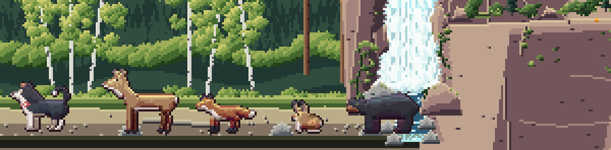
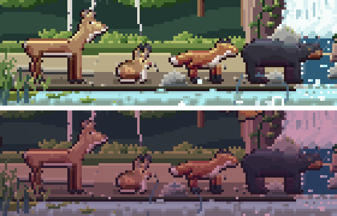

<title>Land Animals Study</title>
<meta name="claude:viewport-fit-sides" content="cover">
<link rel="preconnect" href="https://fonts.googleapis.com">
<link rel="stylesheet" href="https://fonts.googleapis.com/css2?family=Pixelify+Sans:wght@500;700&family=Source+Serif+4:opsz,wght@8..60,400;8..60,600&family=JetBrains+Mono:wght@400;600&display=swap">
<style>
/* Layout: a single reading column like a field-station report, with full-bleed image plates and swatch strips drawn from the lake itself. */
:root {
  --bg: #eef1ec;
  --panel: #e2e8e2;
  --ink: #1b2826;
  --muted: #566764;
  --line: #c3cec7;
  --accent: #a24f45;
  --pine: #2d5747;
  --display: "Pixelify Sans", "Courier New", monospace;
  --body: "Source Serif 4", Georgia, "Times New Roman", serif;
  --mono: "JetBrains Mono", ui-monospace, Menlo, Consolas, monospace;
}
@media (prefers-color-scheme: dark) {
  :root:not([data-theme="light"]) {
    --bg: #0f1918; --panel: #172423; --ink: #e2e9e4; --muted: #97a9a4; --line: #2a3b39;
    --accent: #e29a8b; --pine: #86bba4; color-scheme: dark;
  }
}
:root[data-theme="dark"] {
  --bg: #0f1918; --panel: #172423; --ink: #e2e9e4; --muted: #97a9a4; --line: #2a3b39;
  --accent: #e29a8b; --pine: #86bba4; color-scheme: dark;
}
* { box-sizing: border-box; }
body {
  background: var(--bg); color: var(--ink); font-family: var(--body); font-size: 17px; line-height: 1.6;
  padding-left: max(16px, env(safe-area-inset-left, 0px)); padding-right: max(16px, env(safe-area-inset-right, 0px));
  padding-block: 28px 64px;
}
main { max-width: 720px; margin: 0 auto; display: flex; flex-direction: column; gap: 44px; }
h1, h2, h3 { font-family: var(--display); font-weight: 700; line-height: 1.15; text-wrap: balance; margin: 0; }
h1 { font-size: clamp(32px, 7vw, 46px); letter-spacing: 0.5px; }
h2 { font-size: 26px; color: var(--pine); }
h3 { font-size: 19px; font-weight: 500; }
p { margin: 0; max-width: 65ch; }
section { display: flex; flex-direction: column; gap: 16px; }
.eyebrow { font-family: var(--mono); font-size: 12px; letter-spacing: 1.5px; text-transform: uppercase; color: var(--muted); }
.lede { font-size: 19px; }
a { color: var(--accent); }
figure { margin: 0; display: flex; flex-direction: column; gap: 8px; }
figure img { width: 100%; image-rendering: pixelated; border-radius: 4px; display: block; }
figcaption { font-size: 14px; color: var(--muted); }
.stats { display: grid; grid-template-columns: repeat(auto-fit, minmax(150px, 1fr)); gap: 12px; }
.stat { border-top: 3px solid var(--pine); padding-top: 8px; display: flex; flex-direction: column; gap: 2px; }
.stat b { font-family: var(--display); font-size: 30px; font-weight: 700; font-variant-numeric: tabular-nums; }
.stat span { font-size: 14px; color: var(--muted); }
ol.findings { margin: 0; padding-left: 1.4em; display: flex; flex-direction: column; gap: 12px; }
ol.findings li::marker { font-family: var(--mono); color: var(--accent); }
ol.findings b { font-weight: 600; }
.meter { display: grid; grid-template-columns: 9.5em 1fr; gap: 6px 12px; align-items: center; font-size: 14px; }
.meter .bars { display: flex; flex-direction: column; gap: 3px; }
.bar { height: 10px; border-radius: 2px; background: var(--line); position: relative; }
.bar i { position: absolute; inset: 0 auto 0 0; border-radius: 2px; }
.bar.ours i { background: var(--pine); }
.bar.pack i { background: var(--accent); }
.legend { display: flex; gap: 16px; font-size: 13px; color: var(--muted); flex-wrap: wrap; }
.legend span::before { content: ""; display: inline-block; width: 10px; height: 10px; border-radius: 2px; margin-right: 6px; vertical-align: -1px; }
.legend .l-ours::before { background: var(--pine); }
.legend .l-pack::before { background: var(--accent); }
.skies { display: flex; flex-direction: column; gap: 6px; }
.sky { display: grid; grid-template-columns: 7.5em 1fr; align-items: center; gap: 12px; font-size: 14px; }
.sky div { height: 30px; border-radius: 3px; }
.swatches { display: grid; grid-template-columns: repeat(auto-fit, minmax(200px, 1fr)); gap: 14px; }
.sw { display: flex; flex-direction: column; gap: 6px; min-width: 0; }
.sw .strip { display: flex; height: 34px; border-radius: 3px; overflow: hidden; }
.sw .strip i { flex: 1; }
.sw b { font-weight: 600; font-size: 15px; }
.sw span { font-size: 13px; color: var(--muted); font-family: var(--mono); overflow-wrap: anywhere; }
.lessons { display: grid; grid-template-columns: repeat(auto-fit, minmax(250px, 1fr)); gap: 18px 24px; }
.lessons div { display: flex; flex-direction: column; gap: 4px; }
.lessons h3 { color: var(--accent); }
.lessons p { font-size: 15px; }
ol.rules { margin: 0; padding: 0; list-style: none; counter-reset: r; display: flex; flex-direction: column; border-top: 1px solid var(--line); }
ol.rules li { counter-increment: r; display: grid; grid-template-columns: 2.4em 1fr; gap: 8px; padding: 12px 0; border-bottom: 1px solid var(--line); }
ol.rules li::before { content: counter(r, decimal-leading-zero); font-family: var(--mono); color: var(--muted); font-size: 14px; padding-top: 3px; }
.qs { display: flex; flex-direction: column; gap: 14px; }
.q { background: var(--panel); border-radius: 6px; padding: 16px 18px; display: flex; flex-direction: column; gap: 8px; }
.q h3 { font-size: 18px; }
.q ul { margin: 0; padding-left: 1.2em; font-size: 15px; display: flex; flex-direction: column; gap: 4px; }
.q .rec { font-size: 14px; color: var(--pine); font-family: var(--mono); }
.next { font-size: 15px; color: var(--muted); }
code { font-family: var(--mono); font-size: 0.85em; }
.viewer { display: flex; flex-direction: column; gap: 10px; }
.viewer img { width: 100%; height: auto; image-rendering: pixelated; border-radius: 4px; display: block; aspect-ratio: 1200 / 296; background: var(--panel); }
.pick { display: flex; flex-wrap: wrap; gap: 6px; }
.pick button { font: 600 14px var(--mono); padding: 8px 12px; border-radius: 4px; border: 1px solid var(--line); background: var(--panel); color: var(--ink); cursor: pointer; min-width: 44px; }
.pick button[aria-pressed="true"] { background: var(--pine); color: var(--bg); border-color: var(--pine); }
.pick button:focus-visible { outline: 2px solid var(--accent); outline-offset: 2px; }
.cap { font-size: 15px; min-height: 3em; }
.cards { display: grid; grid-template-columns: repeat(auto-fit, minmax(210px, 1fr)); gap: 16px; }
.card { display: flex; flex-direction: column; gap: 6px; }
.card h3 { color: var(--accent); }
.card p { font-size: 15px; }
.card ul { margin: 0; padding-left: 1.1em; font-size: 14px; color: var(--muted); display: flex; flex-direction: column; gap: 3px; }
.motion { display: grid; grid-template-columns: repeat(4, 1fr); gap: 10px; }
.motion figure img { aspect-ratio: 390 / 630; height: auto; }
@media (max-width: 520px) { .motion { grid-template-columns: repeat(2, 1fr); } }
</style>

<main>
  <header style="display:flex;flex-direction:column;gap:12px">
    <span class="eyebrow">Reel It In · Study 7 · 22 Oct 2026</span>
    <h1>The land animals</h1>
    <p class="lede">Olive, the deer, fox, hare and bear, on the new beach. Next to the scenery they looked flat: big areas of one colour, lit only along their top and bottom rows, while the bank round them is lit as rounded masses from the upper left. They also stopped to drink among the cattails, where you could hardly see them, and floated on the sand with no shadow.</p>
  </header>

  <section>
    <span class="eyebrow">Already in the game, for every version</span>
    <h2>Seen, and standing on the sand</h2>
    <ol class="rules">
      <li><b>On the open sand.</b> The visitors still come out of the trees through the cattails, but now walk on to stop on the open sand beyond them, between the reeds and the falls, where you can watch them.</li>
      <li><b>A shadow under each one,</b> soft on the sand, going where it goes, so it stands on the beach instead of floating over it.</li>
    </ol>
  </section>

  <section class="viewer">
    <span class="eyebrow">On the beach, close up</span>
    <div class="pick" role="group" aria-label="Version">
      <button data-v="now" aria-pressed="false">Now</button>
      <button data-v="A" aria-pressed="true">A</button>
      <button data-v="B" aria-pressed="false">B</button>
      <button data-v="C" aria-pressed="false">C</button>
    </div>
    
    <p class="cap" id="cap"></p>
    
    <p class="cap">In the game, at midday and at dusk.</p>
  </section>

  <section>
    <span class="eyebrow">The three versions</span>
    <h2>What each one tries</h2>
    <div class="cards">
      <div class="card"><h3>A &middot; Lit as one mass</h3><p>Each animal lit like the bank's rock and trees: a band of light toward the sun (upper left), a band of shade away from it, one calm tone between, worked out afresh from each frame so it moves with the body.</p><ul><li>Rounder, more solid; the bear has weight</li><li>The quietest change</li></ul></div>
      <div class="card"><h3>B &middot; Mass and fur</h3><p>A, plus fur: where two different colours of coat meet (the deer's white throat and belly, the fox's white chest, Olive's white blaze) the edge interlocks like hair instead of running straight.</p><ul><li>Reads as fur, not felt</li><li>Only where colours really meet, so no speckle</li></ul></div>
      <div class="card"><h3>C &middot; Sunlit fur</h3><p>B, plus the scene's light: a warm rim where the sun catches the top of the back, and a faint cool light bounced up from the sand along the belly.</p><ul><li>The most dimensional; they glow at golden hour</li><li>The busiest of the three</li></ul></div>
    </div>
  </section>

  <section>
    <span class="eyebrow">Only the light changes</span>
    <h2>How it's done</h2>
    <p>Like the edges in study 6, each version is a pass over the finished sheets: the drawing, sizes and animation stay the same. Once you pick, it joins the art build's last pass with the selective edges, so the land animals are always built this way.</p>
  </section>

  <section>
    <span class="eyebrow">Your call</span>
    <h2>Pick one, or mix</h2>
    <p>Tell me A, B or C, or a mix, and anything about any one animal that still feels off (a pose, a size, a colour). Birds next, with the loon, then fish.</p>
  </section>
</main>
<script>
(function () {
  var notes = {
    now: "Now: flat colour, lit only along the top and bottom rows (with the new staging and shadows).",
    A: "A: lit as one mass from the upper left, like the scenery.",
    B: "B: A, plus fur where two coat colours meet.",
    C: "C: B, plus a warm rim of sun on the back and cool light bounced up from the sand."
  };
  var v = "A";
  var img = document.getElementById("shot"), game = document.getElementById("game"), cap = document.getElementById("cap");
  function show() {
    img.src = "study7/" + v + "-lineup.png";
    game.src = "study7/" + v + "-game.png";
    img.alt = v === "now" ? "The land animals as they are now" : "The land animals, version " + v;
    game.alt = (v === "now" ? "Now" : "Version " + v) + " in the game at midday and at dusk";
    cap.textContent = notes[v];
    document.querySelectorAll("[data-v]").forEach(function (b) { b.setAttribute("aria-pressed", b.dataset.v === v); });
  }
  document.querySelectorAll("[data-v]").forEach(function (b) { b.addEventListener("click", function () { v = b.dataset.v; show(); }); });
  show();
})();
</script>
